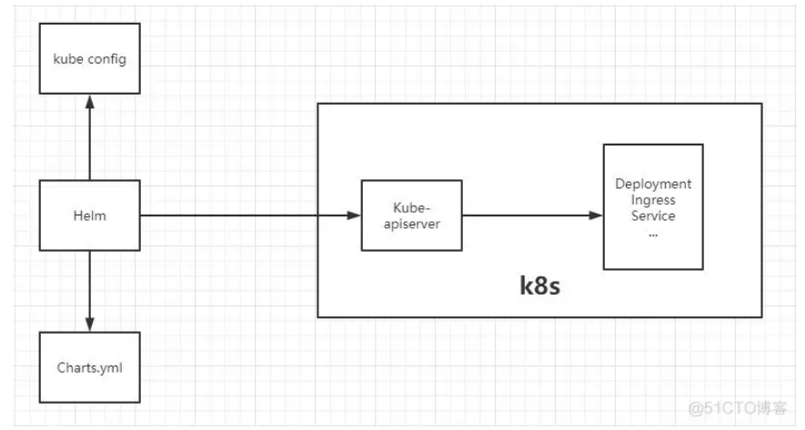

Helm 是什么？？
Helm 是 Kubernetes 的包管理器。包管理器类似于我们在 Ubuntu 中使用的apt、Centos中使用的yum 或者Python中的 pip 一样，能快速查找、下载和安装软件包。Helm 由客户端组件 helm 和服务端组件 Tiller 组成, 能够将一组K8S资源打包统一管理, 是查找、共享和使用为Kubernetes构建的软件的最佳方式。
Helm 解决了什么痛点？
在 Kubernetes中部署一个可以使用的应用，需要涉及到很多的 Kubernetes 资源的共同协作。比如你安装一个 WordPress 博客，用到了一些 Kubernetes (下面全部简称k8s)的一些资源对象，包括 Deployment 用于部署应用、Service 提供服务发现、Secret 配置 WordPress 的用户名和密码，可能还需要 pv 和 pvc 来提供持久化服务。并且 WordPress 数据是存储在mariadb里面的，所以需要 mariadb 启动就绪后才能启动 WordPress。这些 k8s 资源过于分散，不方便进行管理，直接通过 kubectl 来管理一个应用，你会发现这十分蛋疼。 所以总结以上，我们在 k8s 中部署一个应用，通常面临以下几个问题：
- 如何统一管理、配置和更新这些分散的 k8s 的应用资源文件
- 如何分发和复用一套应用模板
- 如何将应用的一系列资源当做一个软件包管理
Helm基本架构

Helm 相关组件及概念
几个概念Helm 组件及相关术语
Helm——Helm 是一个命令行下的客户端工具。主要用于 Kubernetes 应用程序 Chart 的创建、打包、发布以及创建和管理本地和远程的 Chart 仓库。Chart——Chart 代表着 Helm 包。它包含在 Kubernetes 集群内部运行应用程序，工具或服务所需的所有资源定义。你可以把它看作是 Homebrew formula，Apt dpkg，或 Yum RPM 在Kubernetes 中的等价物。Release——Release 是运行在 Kubernetes 集群中的 chart 的实例。一个 chart 通常可以在同一个集群中安装多次。每一次安装都会创建一个新的 release。Repoistory——Repository（仓库） 是用来存放和共享 charts 的地方。可以类比成Maven仓库。
https://www.cnblogs.com/liugp/p/16659802.html
1）Chart 目录结构
# 通过helm create命令创建一个新的chart包
helm create nginx
tree nginx
nginx/
├── charts
├── Chart.yaml
├── templates
│ ├── deployment.yaml
│ ├── _helpers.tpl
│ ├── hpa.yaml
│ ├── ingress.yaml
│ ├── NOTES.txt
│ ├── serviceaccount.yaml
│ ├── service.yaml
│ └── tests
│ └── test-connection.yaml
└── values.yaml
其中关键的目录和文件作用如下：
★ templates/ 目录包含了模板文件。Helm会通过模板渲染引擎渲染所有该目录下的文件来生成Chart，之后将收集到的模板渲染结果发送给K8s。
★ values.yaml 文件对于模板也非常重要。这个文件包含了对于一个Chart的默认值 。这些值可以在用户执行Helm install 或 Helm upgrade时指定新的值来进行覆盖。
★ Chart.yaml 文件包含对于该Chart元数据描述。这些描述信息可以在模板中被引用。
★ _helper.tpl 包含了一些可以在Chart中进行复用的模板定义。
★ 其他诸如deployment.yaml、service.yaml、ingress.yaml文件，就是我们用于生成K8s配置文件的模板，Helm默认会按照如下的顺序将生成资源配置发送给K8s:
Chart.yaml 文件
apiVersion: chart API 版本 （必需）
name: chart名称 （必需）
version: chart 版本，语义化2 版本（必需）
kubeVersion: 兼容Kubernetes版本的语义化版本（可选）
description: 一句话对这个项目的描述（可选）
type: chart类型 （可选）
keywords:
- 关于项目的一组关键字（可选）
home: 项目home页面的URL （可选）
sources:
- 项目源码的URL列表（可选）
dependencies: # chart 必要条件列表 （可选）
- name: chart名称 (nginx)
version: chart版本 ("1.2.3")
repository: （可选）仓库URL ("https://example.com/charts") 或别名 ("@repo-name")
condition: （可选） 解析为布尔值的yaml路径，用于启用/禁用chart (e.g. subchart1.enabled )
tags: # （可选）
- 用于一次启用/禁用 一组chart的tag
import-values: # （可选）
- ImportValue 保存源值到导入父键的映射。每项可以是字符串或者一对子/父列表项
alias: （可选） chart中使用的别名。当你要多次添加相同的chart时会很有用
maintainers: # （可选）
- name: 维护者名字 （每个维护者都需要）
email: 维护者邮箱 （每个维护者可选）
url: 维护者URL （每个维护者可选）
icon: 用做icon的SVG或PNG图片URL （可选）
appVersion: 包含的应用版本（可选）。不需要是语义化，建议使用引号
deprecated: 不被推荐的chart （可选，布尔值）
annotations:
example: 按名称输入的批注列表 （可选）.
Helm 安装 Chart 包的三种方式
Helm 自带一个强大的搜索命令，可以用来从两种来源中进行搜索：
helm search hub从 Artifact Hub 中查找并列出 helm charts。 Artifact Hub中存放了大量不同的仓库。helm search repo从你添加（使用helm repo add）到本地 helm 客户端中的仓库中进行查找。该命令基于本地数据进行搜索，无需连接互联网。
# 添加bitnami仓库源
helm repo add bitnami https://charts.bitnami.com/bitnami
# 从bitnami源查找所有chart包，不指定具体源的话，会查找本地添加的所有源地址的所有chart包
helm search repo bitnami
1）values 传参
安装过程中有两种方式传递配置数据：
--values (或 -f)：使用 YAML 文件覆盖配置。可以指定多次，优先使用最右边的文件。--set：通过命令行的方式对指定项进行覆盖。
如果同时使用两种方式，则 --set 中的值会被合并到 --values 中，但是 --set中的值优先级更高。在--set 中覆盖的内容会被被保存在 ConfigMap 中。可以通过 helm get values <release-name> 来查看指定 release 中 --set 设置的值。也可以通过运行 helm upgrade 并指定 --reset-values 字段来清除 --set 中设置的值。示例如下：
echo '{mariadb.auth.database: user0db, mariadb.auth.username: user0}' > values.yaml
helm install -f values.yaml bitnami/wordpress --generate-name
2）【第一种方式】直接在线 安装不需要先下载包到本地
helm install mysql bitnami/mysql
helm list
3）【第二种方式】离线安装 直接通过安装包安装
# 先删除
helm uninstall mysql
# 拉包到本地
helm pull bitnami/mysql
# 不解压直接安装
helm install mysql ./mysql-9.3.1.tgz
helm list
4）【第三种方式】离线安装 解压包再安装
# 拉包到本地
helm pull bitnami/mysql
# 解压安装
tar -xf mysql-9.3.1.tgz
# 开始安装
helm install mysql ./mysql \
--namespace=mysql \
--create-namespace \
--set image.registry=myharbor.com \
--set image.repository=bigdata/mysql \
--set image.tag=8.0.30 \
--set primary.service.type=NodePort \
--set service.nodePorts.mysql=30306
# 查看在运行的Release
helm list
# 卸载
helm uninstall mysql -n mysql
1）变量
模板（templates/）中的变量都放在{{}}
Helm命令解析 命令 描述 create 创建应用模板 install 安装charts list 列出本地release pull 下载charts到本地目录 package 将chart目录打包为chart归档包 show 查看cahrts内容 uninstall 卸载release upgrade 更新releasr version 查看helm版本号